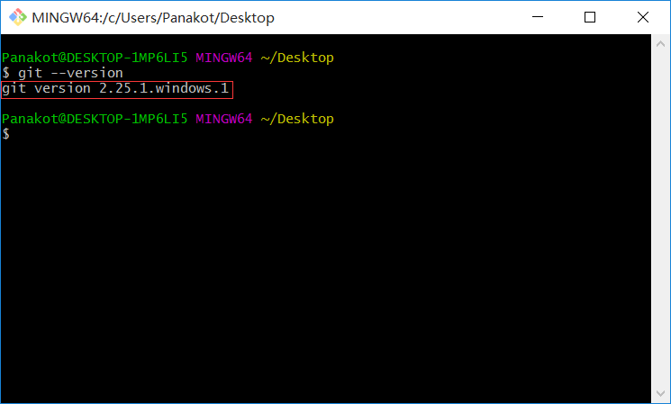
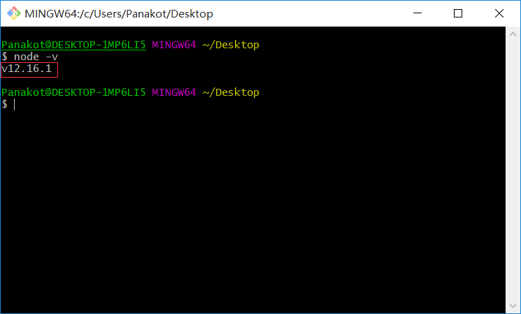
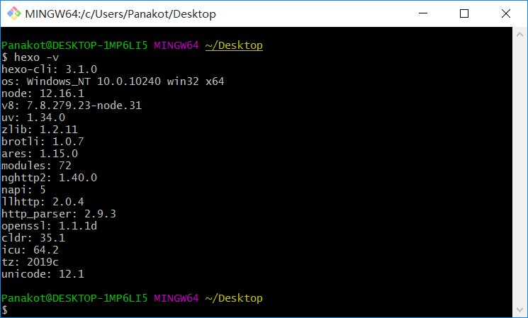

Hexo的安装
1. 安装前准备
在安装Hexo前，首先要把承载Hexo的两个平台先安装好，分别是：
- Node.js (Node.js 版本需不低于 8.10，建议使用 Node.js 10.0 及以上版本)
如果您的电脑中已经安装上述必备程序，那么恭喜您！你可以直接前往 安装 Hexo 步骤。如果没有，可以参考以下安装指导完成安装。
2. 安装Git
- Windows：下载并安装 Git。
- Mac：使用 Homebrew, MacPorts 或者下载安装程序。
- Linux (Ubuntu, Debian)：
sudo apt-get install git-core。 - Linux (Fedora, Red Hat, CentOS)：
sudo yum install git-core。
>Take a moment >如果你是 CentOS 服务器上的，可以直接使用[HexoOneClickInstallation](https://github.com/PasserByJia/HexoOneClickInstallation)这个脚本快速安装 Hexo。 ### 3. 安装Node.js Node.js 为大多数平台提供了官方的[安装程序](https://nodejs.org/en/download/)。对于中国大陆地区用户，可以前往[淘宝Node.js镜像](https://npm.taobao.org/mirrors/node)下载。Warning
由于墙的问题，我们访问上面的资源，有几个问题：1）加载慢； 2）打不开； 3）下载速度小。
这里给个建议——使用代理，不推荐使用，因为考虑安全性的问题。也可以使用这个网站适用于Linux安装；Windows安装可以下载GitHub【waylau/git-for-win】收录了存储于百度云的下载地址,对于中国大陆地区用户，可以前往淘宝 Git for Windows镜像 下载Git安装包。
其它的安装方法：
- Windows：通过nvs（推荐）或者nvm安装。
- Mac：使用Homebrew或MacPorts安装。
- Linux（DEB/RPM-based）：从NodeSource安装。
- 其它：使用相应的软件包管理器进行安装，可以参考由 Node.js 提供的指导。
对于 Mac 和 Linux 同样建议使用 nvs 或者 nvm，以避免可能会出现的权限问题。
安装Node.js的最佳方式
cURL:
$ curl https://raw.github.com/creationix/nvm/v0.33.11/install.sh | shWget:
$ wget -qO- https://raw.github.com/creationix/nvm/v0.33.11/install.sh | sh 安装完成后，重启终端并执行下列命令即可安装 Node.js。
$ nvm install stable 4. Hexo安装
所有必备的应用程序安装完成后，即可使用 npm 安装 Hexo。
$ npm install -g hexo-cli 5. 验证软件是否安装成功
1) 检查Git

2) 检查Node.js

3) 检查Hexo
